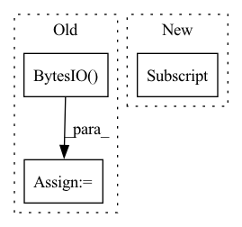

Pattern ID :8359
Before Change
if USE_TORCH:
import io
import torch
b0 = torch.load(io.BytesIO( b0) )
else:
b0 = fake_torch_load(b0)
After Change
def load_weights_from_torch(self):
b0 = fake_torch_load(fetch(model_urls[self.number] ))
for k,v in b0.items():
for cat in ["_conv_head", "_conv_stem", "_depthwise_conv", "_expand_conv", "_fc", "_project_conv", "_se_reduce", "_se_expand"]:In pattern: SUPERPATTERN
Frequency: 3
Non-data size: 3
Instances Fragment ID: 29252556
Project Name: geohot/tinygrad
Commit Name: 7d12482d80bb5a367a6731747c16cf69c656323b
Time: 2021-10-30
Author: geohot@gmail.com
File Name: models/efficientnet.py
M Class Name: EfficientNet
N Class Name: EfficientNet
M Method Name: load_weights_from_torch(1)
N Method Name: load_weights_from_torch(1)
M Parent Class:
N Parent Class:
M File Name: models/efficientnet.py
N File Name: models/efficientnet.py
M Start Line: 132
M End Line: 158
N Start Line: 140
N End Line: 150
Before Change
else:
blocksize = 1000000 // just made something up
buf = io.BytesIO()
size = 0
while True:
buf1 = resp.read(blocksize)
if not buf1:After Change
def download(url, path):
file_name = os.path.join(path, url.split("/")[-1] )
if os.path.exists(file_name):
print(f"Dataset already downloaded at {file_name}.") Fragment ID: 29252557
Project Name: continvvm/continuum
Commit Name: 21c44f320830e89c7754209a9c98affafb0932c8
Time: 2020-06-17
Author: ar.douillard@gmail.com
File Name: continuum/download.py
M Class Name: AnonimousClass
N Class Name: AnonimousClass
M Method Name: download(2)
N Method Name: download(3)
M Parent Class:
N Parent Class:
M File Name: continuum/download.py
N File Name: continuum/download.py
M Start Line: 6
M End Line: 36
N Start Line: 7
N End Line: 17
Before Change
(input_res, input_res))
with torch.no_grad():
buf = io.BytesIO()
Image.fromarray(img_np).save(buf, format="png")
img_pil = Image.open(io.BytesIO(remove(
buf.getvalue()))).convert("RGBA")
After Change
detector.eval()
predictions = detector([torch.from_numpy(img_for_crop).permute(2, 0, 1) / 255.])[0]
human_ids = torch.where(
predictions["scores"] == predictions["scores"][predictions["labels"] == 1] .max())
bbox = predictions["boxes"][human_ids, :].flatten().detach().cpu().numpy()
width = bbox[2] - bbox[0] Fragment ID: 29252555
Project Name: yuliangxiu/icon
Commit Name: 36369bf0203645a368b265605ad69fd472676a3f
Time: 2022-11-15
Author: yuliang.xiu@tuebingen.mpg.de
File Name: lib/pymaf/utils/imutils.py
M Class Name: AnonimousClass
N Class Name: AnonimousClass
M Method Name: process_image(5)
N Method Name: process_image(5)
M Parent Class:
N Parent Class:
M File Name: lib/pymaf/utils/imutils.py
N File Name: lib/pymaf/utils/imutils.py
M Start Line: 118
M End Line: 146
N Start Line: 108
N End Line: 124